Dr. rer. nat.
Markus Bauer
Salvio-Arrhenatheretum © Markus Bauer
Researcher | Technical University of Munich
Self-employed vegetation mapper | Landschaftsökologie Bauer
About
I am an ecologist interested in the predictable development of target vegetation through ecological restoration approaches. This should lead to increased biodiversity in degraded protected areas and in modern landscape features that can therefore contribute to green infrastructure.
Furthermore, I am a self-employed vegetation mapper in southern Bavaria. I work with GNSS for an exact monitoring.
Über
Ich bin Ökologe und interessiere mich für die vorhersehbare Entwicklung der Zielvegetation durch Renaturierung. Dies soll zu einer erhöhten biologischen Vielfalt in degradierten Schutzgebieten und in modernen Landschaftselementen führen, die so zur grünen Infrastruktur beitragen können.
Außerdem bin ich ein freiberuflicher Vegetationskartierer in Südbayern. Ich arbeite mit GNSS für ein genaues Monitoring.
Research

Grassland Ecology

Community Ecology

Restoration Ecology
Publications
Concepts
Teixeira LH*, Bauer M*, Moosner M, Kollmann J (2023) River dike grasslands can reconcile biodiversity and different ecosystem services to provide multifunctionality. – Basic and Applied Ecology 66, 22–30. https://doi.org/10.1016/j.baae.2022.12.001
Experiments
Bauer M, Huber JK, Kollmann J (2023) Fit by design: Developing seed–substrate combinations to adapt dike grasslands to microclimatic variation. – Journal of Applied Ecology 60, 2413–2424. https://doi.org/10.1111/1365-2664.14497
Monitoring
Bauer M, Huber JK, Kollmann J (2024) Beta diversity of restored river dike grasslands is strongly influenced by uncontrolled spatio-temporal variability. – Journal of Vegetation Science 35, e13293. https://doi.org/10.1111/jvs.13293
Bauer M & Albrecht H (2018) Vegetation monitoring in a 100-year-old calcareous grassland reserve in Germany. – Basic and Applied Ecology 42, 15–26. https://doi.org/10.1016/j.baae.2019.11.003
Affiliation
Postoctoral researcher
Technical University of Munich
TUM School of Life Science
Chair of Restoration Ecology
Emil-Ramann-Straße 6
85354 Freising-Weihenstephan
Germany
Tel. +49 8161 712 493
markus1.bauer[at]tum.de
www.lss.ls.tum.de/roek
Homepage/Profile
Landschaftsökologie Bauer

Vegetationskartierung

Statistische Datenanalyse

Monitoring und Literaturstudien
- BNT-Kartierung (BayKompV)
- FFH-Lebensraumtypen
- Baumbestandspläne
- Floristisch-vegetations-kundliche Aufnahmen
- Populationserfassung
- Erfolgskontrolle und Dauerbeobachtungs-flächen
- GNSS-Sensor ppm10xx (Genauigkeit 1 cm)
- Datenauswertung mit R
- Maschinenlesbare Aufbereitung
- Abbildungserstellung
- GIS mit QGIS und R
- Digitalisierung von Vektordaten
- Räumliche Analysen
- Kartendarsellung
- Dashboards mit Shiny
- Erstellung von Monitorinkonzepten
- repräsentative Aufnahmeverteilung; statistisch auswertbar
- Literaturrecherche zu Forschungsfragen
- Erstellung von Publikationen für Fachzeitschriften ANLiegen Natur
Referenzen
Kartierung Biotop- und Nutzungstypen (BNT) (Auswahl)
- München Stadtgebiet, U-Bahnverlängerung Pasing-Freiham, 2025, 238 ha
‒ Projekt der Stadt München beauftragt durch Natur Perspektiven, Marzling - Grünland München-Riem, 2024, 9 ha
‒ Jestaedt + Partner, München - BPlan 163, Freising-Lerchenfeld, 2024, 4 ha
‒ Natur Perspektiven, Marzling - BPlan 72/03, München-Unterföhring, 2024, 3 ha
‒ Natur Perspektiven, Marzling - Max-Planck-Campus, Martinsried, München, 2023, 35 ha
‒ Natur Perspektiven, Marzling
Biotopkartierung
- Pionierübungsplatz Krailling 2023, 70 ha
‒ Vorbereitung für Bayern-Netz- Natur-Projekt ‒ Natur Perspektiven, Marzling - Fortbildung: Kurs Biotopkartierung 2023 (5 Tage)
‒ Bayerische Akademie für Naturschutz und Landschaftspflege (ANL), Rosenheim - Mähwiesenkartierung Lkr. Aichach 2022 ‒ Kartierung zur Potentialabschätzung
‒ peb, Dachau
Vertragsnaturschutzprogramm (VNP)
- Offenlandkartierung um Nesselwang und Pfronten (Ostallgäu) 2024
‒ Bissinger Landschaftsplanung, München
Monitoring
Monitoring auf Ausgleichsflächen, München-Langwied, 2024
‒ Jestaedt + Partner, MünchenBundeswaldinventur (BWI) ‒ Vegetationsmonitoring Bayern 2023 (≈ Los 8) Braun-Blanquet-Aufnahmen auf Dauerbeobachtungsflächen, die als FFH-LRT markiert waren
‒ Projekt vom Bundesamt für Naturschutz
‒ Beauftragt durch Hochschule Weihenstephan-Triesdorf (Prof. Dr. Jörg Ewald)PEPL Garchinger Heide ‒ Vegetationsmonitoring 2021 Konzeptentwicklung und Erstaufnahme des Monitorings im Rahmen des PEPL
‒ Heideflächenverein Münchner Norden e.V. / Technische Universität München
Kontakt
Landschaftsökologie Bauer
85354 Freising
Deutschland
0049 152 5639 1781

Impressum
Datenschutz